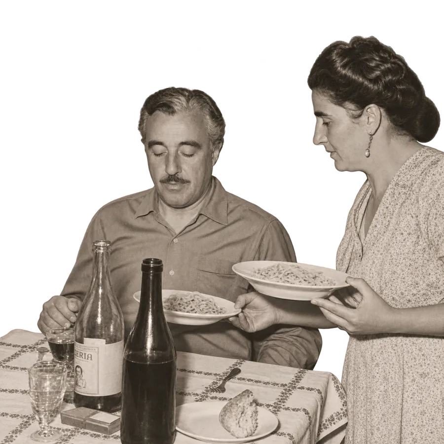

ROMA · TRASTEVERE

Secondo Tradizione e Tanto tanto Amore.
Nessun piatto trovato. Prova un altro nome.
Roma, a tavola.
Segnala sempre allergie e intolleranze al personale e chiedi il menù allergeni. Non è garantito un ambiente completamente privo di allergeni; possono essere presenti tracce.
I disegni accanto ai prezzi riprendono i simboli della carta originale. La foglia è un simbolo della carta, non una certificazione di assenza di allergeni.
I numeri accanto ai piatti riprendono il PDF. L’assenza di un numero non garantisce l’assenza di allergeni.
* In base alla disponibilità del mercato, i prodotti contrassegnati possono essere surgelati all’origine oppure sottoposti a trattamento di bonifica preventiva mediante congelamento. Consulta la nota completa nella carta originale.
Servizio 5%. Prezzi in euro. Il bozzetto riprende la carta INV2026 di Original; conferma disponibilità e informazioni con il personale.